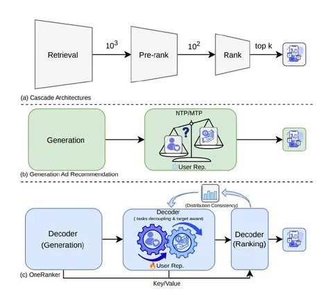

Сегодня приступаем к разбору статьи о том, как объединить генерацию кандидатов и ранжирование в одной модели. Начнём с проблематики и первого шага фреймворка OneRanker.
У современных рекомендательных подходов есть несколько минусов:
• Конфликт интереса пользователя и ценности для бизнеса. Генерация кандидатов опирается на клики и конверсии в истории пользователя, но системе важно учитывать и ценность объектов для бизнеса (например, для рекламы это eCPM). Если напрямую обучать генератор на обеих целях, они тянут общее представление в разные стороны: ухудшается и охват интересов, и отбор ценных объектов. Если же учитывать ценность только при ранжировании, лучшие по этому критерию кандидаты могут отсеяться раньше, чем начнётся ранжирование.
• Нечувствительность к кандидату (target-agnostic). При генерации представление пользователя одинаково для разных кандидатов. Поэтому модель не может выделить в истории именно те события, которые важны для оценки конкретного объекта.
• Разрыв между этапами. Отдельные генератор и ранжировщик могут повторно обрабатывать одну историю и учить разные представления.
Чтобы решить эти проблемы, авторы предлагают интегрировать генерацию в ранжирование на архитектурном уровне. Так появился фреймворк OneRanker. Он состоит из трёх шагов.
Шаг 1. Основа генерации
OneRanker опирается на предыдущую работу Tencent — GPR. История пользователя представлена последовательностью разнородных токенов: пользователя (U), контента (C), контекста (X) и объектов (I). Декодер на основе HSTU обрабатывает эту последовательность, а авторегрессионный механизм multi-token prediction (MTP) позволяет за один проход модели параллельно строить несколько полных цепочек семантических ID.
Что происходит на втором шаге фреймворка, подробно разберём в следующем посте.
@RecSysChannel
Разбор подготовил
